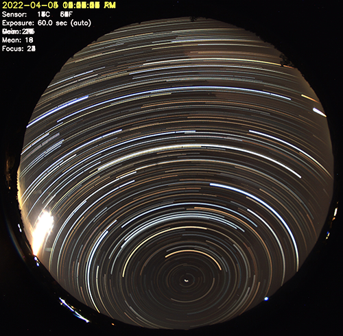

Startrails are images that contain all the images from a night on top of each other.
startrails program
The startrails program can take arguments:
Usage: startrails [-v] -d <dir> -e <ext> [-b <brightness>] [-o <output>] [-S] [-s <width>x<height>]
Arguments:
-h : display this help, then exit
-v : increase log verbosity
-S : print image directory statistics without producing image.
-d <str> : directory from which to read images
-e <str> : filter images to just this extension
-o <str> : output image filename
-s <int>x<int> : restrict processed images to this size
-b <float> : ranges from 0 (black) to 1 (white).
A moonless sky may be as low as 0.05 while full moon can be as high as 0.4
The only configuration option for startrails in config.sh is BRIGHTNESS_THRESHOLD which defaults to 0.1. Any image with an average brightness greater than this will be skipped during startrails image generation, so almost all daytime images are skipped. You may need to play around with this to get the best results, as allsky cameras, lenses, and sky brightnesses vary from person to person.
Example when running the program manually:./startrails -d ./images/20180223/ -e jpg -b 0.15 -o ./images/20180223/startrails/startrails.jpg
To disable automatic startrails, open config.sh and set STARTRAILS to "false".
Tip: If you set the Image Width and Image Height of your camera in the WebUI Camera Settings page to the actual values of your camera, startrails generation will skip any file that's not the correct size. This will eliminate any garbage images that happen to be generated.
Troubleshooting
If your startrails aren't working and you get a message No images below threshold 0.100, writing the minimum image only, this means all your images are too bright. If startrails previously worked, did you recently update the BRIGHTNESS_THRESHOLD setting in config.sh? If so, set it back to what it used to be.
The key to getting startrails to work is making sure BRIGHTNESS_THRESHOLD is correct for your skies. To do this you need to know typical nighttime sky brightness values. Do the following (replace "DATE" below with the date of a non-working startrails):- Create a temporary directory to hold nighttime images:
mkdir ~/allsky/images/test. - Open a "File Manager" window and go into allsky/images/DATE.
- Using the time of each image, move the nighttime files to allsky/images/test (select with mouse, then drag to the test directory). nighttime includes any file you want in the startrails image.
- cd ~/allsky/scripts
- Run s(tartrails) on the test directory,
which contains only nighttime images:
./generateForDay.sh -s test. - It should say No images below....
- Look at the "Minimum..." line. Set the BRIGHTNESS_THRESHOLD to the maximum, or slightly below it.
./generateForDay.sh -s test # this should give pretty good results- Adjust BRIGHTNESS_THRESHOLD
and re-run
generateForDay.shas needed. - When done, in the "File Manager", move all the images in allsky/images/test back to allsky/images/DATE.
rm -fr ~/allsky/images/test # remove the temporary directory- Now, create the final startrails:
./generateForDay.sh -s DATE- If you want to upload the startrails.jpg
file you just created, see the note generated by
generateForDay.sh.